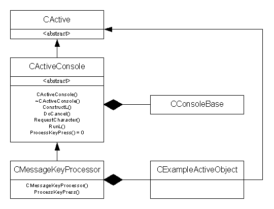

|
| |
The following example code fragments show how to construct a program with two active objects, where one controls the initiation and cancellation of the other.
In these examples:
CActiveConsole is an active object and contains a
pointer to a CConsoleBase object which is a service provider.
Through this service provider, the active object provides the facility to
request a character from the keyboard.
RunL() delegates the handling of completed requests to
the pure virtual function ProcessKeyPress(), which must be
provided by a derived class.
CMessageKeyProcessor is further derived from
CActiveConsole and contains a pointer to another active object
CExampleActiveObject, which requires input from the
keyboard.
Depending on the input character, the
CMessageKeyProcessor active object does one of the
following:
issues a request to the CExampleActiveObject active
object
cancels any outstanding request to the
CExampleActiveObject active object
does nothing
The implementation of the CExampleActiveObject active
object is not relevant to the example and is not shown.
The following diagram shows the relationship between the classes.

The class CActiveConsole encapsulates the provision of
basic keyboard services. Its iConsole data member is a pointer to
the service provider, the CConsoleBase object.
The active object class is defined as:
class CActiveConsole : public CActive
{
public:
CActiveConsole(CConsoleBase* aConsole);
void ConstructL();
~CActiveConsole();
void RequestCharacter();
void RunL();
void DoCancel();
virtual void ProcessKeyPress(TChar aChar)=0;
protected:
CConsoleBase* iConsole;
};
The class constructor takes a pointer to a
CConsoleBase object as its single argument and initialises its
iConsole data member to this value:
CActiveConsole::CActiveConsole(CConsoleBase* aConsole)
: iConsole(aConsole)
{}
The ConstructL() function adds the active object to
the active scheduler:
void CActiveConsole::ConstructL()
{
CActiveScheduler::Add(this);
}
The destructor cancels any outstanding request before destroying the active object:
CActiveConsole::~CActiveConsole()
{
Cancel();
}
DoCancel() is implemented to cancel the request to
iConsole.
The RequestCharacter() function makes a request for a
key press to the service provider by calling
iConsole->Read(iStatus) and setting the active request
flag:
void CActiveConsole::RequestCharacter()
{
iConsole->Read(iStatus);
SetActive();
}
The RunL() funcion makes a call to the
ProcessKeyPress() function. This is a pure virtual function that
derived classes must implement to handle the key press and to reissue the
request:
void CActiveConsole::RunL()
{
ProcessKeyPress(TChar(iConsole->KeyCode()));
}
|
The class CMessageKeyProcessor is a concrete class, derived
from CActiveConsole. It provides an implementation for the
ProcessKeyPress() function and can issue or cancel requests to a
CExampleActiveObject active object.
This active object class is defined as:
class CMessageKeyProcessor : public CActiveConsole
{
public:
...
CMessageKeyProcessor(CConsoleBase* aConsole, CExampleActiveObject* iExampleObject);
void ProcessKeyPress(TChar aChar);
private:
CExampleActiveObject* iExampleObject;
};
The first constructor parameter specifies a CConsoleBase
which will be used to provide asynchronous keyboard input.
the second constructor parameter specifies a
CExampleActiveObject which will be controlled by this
CMessageKeyProcessor.
The behaviour of the ProcessKeyPress() function depends on
the key code value:
void CMessageKeyProcessor::ProcessKeyPress(TChar aChar)
{
if (aChar == 'm' || aChar == 'M')
{
iExampleObject->Cancel();
iExampleObject->IssueRequest();
}
if (aChar == 'c' || aChar == 'C')
{
iExampleObject->Cancel();
}
if (aChar != EKeyEscape)
{
RequestCharacter();
}
else
{
iExampleObject->Cancel();
CActiveScheduler::Stop();
}
}
|
In the code fragment below, an active scheduler is created to which both
a CMessageKeyProcessor active object and a
CExampleActiveObject active object are added:
LOCAL_C void doExampleL()
{
CActiveScheduler* exampleScheduler=new (ELeave) CActiveScheduler;
CleanupStack::PushL(exampleScheduler);
CActiveScheduler::Install(exampleScheduler);
CExampleActiveObject* iExampleObject =
CExampleActiveObject::NewLC();
CMessageKeyProcessor* keyProcessor=
CMessageKeyProcessor::NewLC(console, iExampleObject);
keyProcessor->RequestCharacter();
CActiveScheduler::Start();
CleanupStack::PopAndDestroy(3);
}
An instance of the active scheduler, exampleScheduler is
pushed onto the cleanup stack and installed as the current active
scheduler.
An instance of the CExampleActiveObject active object is
creatred.
An instance of the CMessageKeyProcessor active object is
created and this is in control.
keyProcessor->RequestCharacter() issues a request for
keyboard input.
CActiveScheduler::Start() starts the active scheduler. At
least one outstanding request is necessary before the wait loop is started,
otherwise the thread hangs. All further request issuing and servicing occurs
within this function. The wait loop continues until one of the active
objects’ RunL() calls
CActiveScheduler::Stop().
The active objects and the active scheduler are popped from the cleanup stack and destroyed.
Copyright ©2002 Symbian Ltd. 6.1-00174 |
|